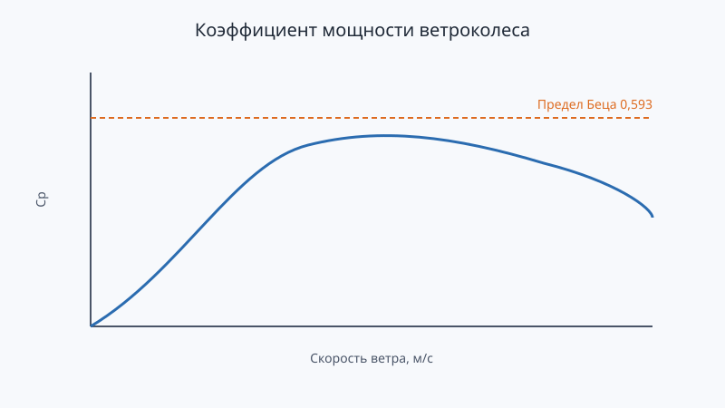
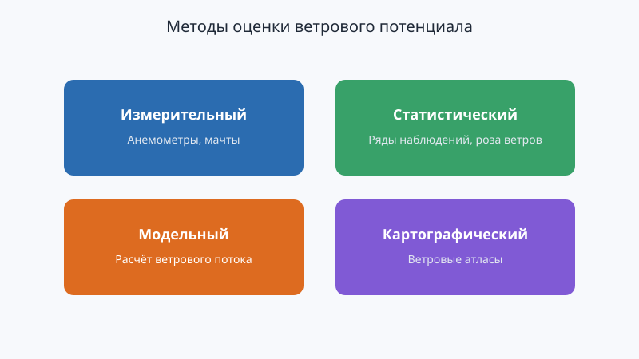

Глава 3. Ветер и ресурсы энергии ветра
3.1 Ветер как источник энергии
Ветер — это движение воздушных масс, вызванное неравномерным нагревом земной поверхности и атмосферы. Кинетическая энергия движущегося воздуха является одним из важнейших возобновляемых источников энергии (ВИЭ).
Энергия ветра пропорциональна кубу его скорости, поэтому даже небольшое увеличение скорости ветра существенно повышает доступную мощность. Это делает выбор места размещения ветроустановки (ветрогенератора) критически важным для эффективности проекта.
Для характеристики повторяемости направлений ветра в данной местности используется роза ветров — векторная диаграмма, применяемая при выборе площадки для ветроустановки.

Ветроустановка преобразует кинетическую энергию ветра в механическую, а затем в электрическую или тепловую энергию. Эффективность этого преобразования ограничена теоретическим пределом.
3.2 Ресурсы энергии ветра
Ресурсы энергии ветра оцениваются по среднегодовой скорости ветра, её распределению по направлениям и повторяемости. Ключевой характеристикой ветроколеса является коэффициент мощности ветроколеса — доля энергии ветра, преобразуемая в полезную мощность.
Теоретический предел этого коэффициента — предел Беца, равный приблизительно 59,3 %. Ни одна реальная ветроустановка не может извлечь больше этой доли кинетической энергии ветра.

Для ветроустановок важны также стартовая скорость ветра, при которой установка начинает вырабатывать полезную мощность, и номинальная скорость ветра, при которой установка выходит на номинальную мощность.
3.3 Ветроустановки и оценка ветрового потенциала
Оценка ветрового потенциала территории выполняется по нескольким взаимодополняющим направлениям.
- Измерительное — установка анемометров и мачт для измерения скорости и направления ветра на разных высотах.
- Статистическое — обработка многолетних рядов наблюдений, построение розы ветров и функций распределения.
- Модельное — расчёт ветрового потока с учётом рельефа и шероховатости поверхности.
- Картографическое — построение ветровых атласов для целей планирования размещения ветроустановок.
Наибольшая точность достигается при совместном использовании измерений и моделирования — это стандартная практика при подготовке проектов ветроэнергетики.

Проверка знаний
-
Что такое ветер?
Движение воздушных масс, вызванное неравномерным нагревом земной поверхности и атмосферы; источник кинетической энергии.
-
Что такое роза ветров?
Векторная диаграмма, показывающая повторяемость направлений ветра в данной местности за период; используется при выборе места размещения ветроустановки.
-
Что характеризует коэффициент мощности ветроколеса?
Долю энергии ветра, преобразуемую ветроколесом в полезную мощность. Теоретический предел (Бец) — 0,593.
-
Чему равен предел Беца?
Максимальная теоретическая доля кинетической энергии ветра (≈ 59,3 %), которую может извлечь идеальный ветродвигатель.
-
Что такое стартовая и номинальная скорость ветра?
Стартовая — минимальная скорость, при которой установка начинает вырабатывать полезную мощность; номинальная — скорость, при которой установка выходит на номинальную мощность.
-
Перечислите методы оценки ветрового потенциала.
Измерительный, статистический, модельный и картографический.